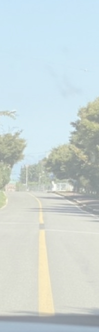

생각이 보다 더 좋은 빛을 내도록 ,
한 작품을 빛나게 하고 본질을 잃지 않는 사람
: 보석의 원석 - 빛을 내는 웹디자이너 이은미입니다.
My Story
: 저는 이렇게
성장했어요
늦둥이로 태어났고, 사랑받으며 자랐습니다.
어렸을 적부터 항상 무언가를 만들어내고 꾸며나가는 것이 신비롭고 흥미로웠습니다.
성장하며 디자인이라는 길을 선택하기에 많은 벽이 있었지만,포기하지 않고 웹디자인을 선택했습니다.
다른 사람과 비교하며 낙담할 때도 있었지만,
열심히 공부하고 노력하며 주변인들의 사랑과 격려로 이겨낼 수 있었습니다.
대학에 진학하여 공부하고,졸업 후 실무를 경험하며
디자인이란 생각의 무한이며, 보는 사람들에게 경험과 느낌을 선물해 주는 일이라는 것을 느꼈습니다.

Inspiration from my mundane
작은 것에서부터 영감을 얻어요.
작은 일상 속, 디테일에서 영감을 얻는 저는 작은 것 하나 놓치지 않는
모두의 생각을 보다 더 빛나도록, 원석처럼 본질을 잃지 않는 디자이너를 목표로 합니다.
재능을 끝없이 발전시키고 결정체가 되기 위한 도전을 멈추지 않을 것 입니다.
My Work Style
한계를 넘는 긍정 열정 마인드
저의 가장 큰 장점은 한계를 넘는 긍정적 열정적인 마인드라고 생각합니다.
첫 웹디자이너 업무를 시작하며 SNS 운영, 이벤트 페이지 디자인, 패키지 디자인 업무를 맡았습니다. 초기엔 부족한 역량에 걱정이 앞섰지만 모르는
것들에 대해 도전하고 습득 할 수 있는 기회라는 생각이 들었고 감사한 경험으로 쌓아나가고 싶었습니다.
문제가 생겼을 땐 가뿐하게
저의 단점은 웹디자이너라는 직업을 가지며 정말 완벽하게 해야 한다는 생각이 오히려 독이 될 수 있다고 느꼈습니다. 팀 프로젝트에서 디자인 기획은
순조로웠지만 시간이 갈수록 더 잘하고 싶고 더 만족스러운 디자인을 하겠다는 욕심이 들었습니다. 혼자만의 욕심으로 프로젝트 수행 시간을 지체하고
팀원들에게
피해를 줄 수 있다는 것을 느꼈습니다. 오히려 과욕이 되어 촉박한 시간과 작업물이 난해하게 되는 경우를 마주하게 되어 미안함이 들었습니다. 저는 이
My Skills
사진보정,편집,합성이 가능하며 원하는 결과를 능숙하게 도출합니다.
로고,아이콘,그래픽 디자인이 가능하며 인쇄물 제작도 자유롭게 가능합니다.
움직이는 GIF 제작이 가능하며 간단한 영상 편집이 가능합니다.
애니메이션, 인트로 등 간단한 영상편집이 가능합니다.
피그마를 이용한 UI디자인과
간단한 인터랙션이 가능합니다.
HTML과 CSS언어를 통해 웹사이트의 구조를 이해하며
실제로 구현합니다.
My experience
이런 분야도 할 줄 알아요 :)
실무에서 웹디자인 뿐만 아니라,
브랜딩/패키지디자인 프로젝트에 함께 임했습니다.
레퍼런스 체크, 디자인 , 실제 컬러감리까지 완벽하게 진행합니다!
POP,VMD도 다양하게 가능합니다.
Things I Like
제가 사랑하고 좋아하는 것들 입니다.
제가 일상 속에서 행복을 누리는 일들이에요
반려견과 함께하거나, 집중해서 그림을 그리거나,
여행도 카페도 좋아해요! 저랑 함께 카페 가요 :)